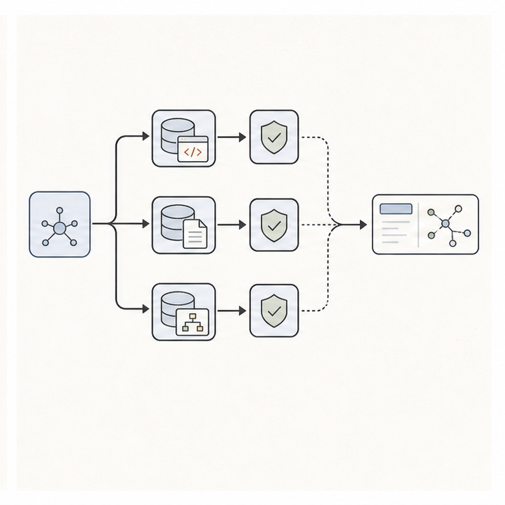

经历与项目
点击卡片查看详情教育经历
2022 — 2025浙江大学
电子信息 · 硕士 · 人工智能 / 计算机视觉
2018 — 2022北京科技大学
智能科学与技术 · 本科
01 / EDUCATION教育经历
研究训练形成问题定义、实验设计与可验证评测能力，并逐步走向 Agent Runtime 工程。
展开经历＋
浙江大学
电子信息 · 硕士 · 人工智能 / 计算机视觉
北京科技大学
智能科学与技术 · 本科
教育经历
研究训练形成问题定义、实验设计与可验证评测能力，并逐步走向 Agent Runtime 工程。
Research path
硕士期间研究人工智能与计算机视觉，完成医学图像处理方向 SCI 论文；本科阶段开展小模型微调研究并发表 SCI 论文。
这段训练形成了从问题定义、实验设计到结果验证的完整研究习惯，也成为后续构建 Agent 评测体系的基础。
公司经历
 02 / PRODUCTION RUNTIME
02 / PRODUCTION RUNTIME可观测 Agent Runtime
以 typed state、条件边和完整 trace，让多轮工具链可约束、可回放、可归因。
查看 Runtime＋
可观测 Agent Runtime
以 typed state、条件边和完整 trace，让多轮工具链可约束、可回放、可归因。
Runtime design
基于 LangGraph 实现 Router–Planner–Executor–Verifier–Synthesizer 状态机，以 typed AgentState 管理 query、plan、evidence、verification、tool calls、迭代预算与完整 trace。
通过条件边在 simple RAG、复杂规划和证据不足后的 replan 之间路由，将生产排障过程变成可约束、可回放、可归因的执行链。
 03 / TOOL ENVIRONMENT
03 / TOOL ENVIRONMENT统一检索工具环境
让训练 rollout 与线上 Agent 复用同一套检索协议和服务。
查看工具环境＋
统一检索工具环境
让训练 rollout 与线上 Agent 复用同一套检索协议和服务。
Retrieval runtime
将 Keyword、Semantic、Graph、Hybrid 与 read_chunk 归一为结构化工具协议，以 RRF 与 CrossEncoder 处理多路召回融合与重排。
embedding / reranker 拆为独立 HTTP 服务供训练 rollout 复用，降低训练进程与检索模型的显存耦合。

04 / TRAINING & EVALUATION可回放训练与评测链路
保留每轮工具调用、响应和 Reward，让策略问题可以定位与复现。
查看训练链路＋

可回放训练与评测链路
保留每轮工具调用、响应和 Reward，让策略问题可以定位与复现。
Verifiable loop
将 2–4 hop gold evidence 转换为 Oracle ReAct 监督轨迹，串联 LLaMA-Factory LoRA SFT 与 verl 多轮 GRPO。
联合 Correctness、Faithfulness、gold-hop precision / recall、Grounding 和搜索不足惩罚，并以 premature collapse、over-extension、step alignment 区分漏检、过早停止和过度搜索。
研究论文
 05 / RESEARCH
05 / RESEARCHMemoWorld
面向持续演化记忆架构的失败条件化 Memory World 生成方法。
查看研究＋
MemoWorld
面向持续演化记忆架构的失败条件化 Memory World 生成方法。
AAAI 2027
共同第一作者，在投。工作关注现有记忆控制器依赖固定任务流训练、容易产生“静态世界过拟合”的问题。
MemoWorld 将泛化单元从任务重新定义为记忆依赖模体，通过动态构造证据结构，训练智能体完成记忆写入、修订、分支与遗忘。
开源项目
learn-workbuddy06 / HARNESS CORERuntime、Context 与 Safety
从统一 Agent Loop 到长任务恢复、权限门禁和可验证审计。
查看核心贡献＋
Runtime、Context 与 Safety
从统一 Agent Loop 到长任务恢复、权限门禁和可验证审计。
Core contributor
统一 ToolSpec、ToolCall、ProviderRequest 与 ModelTurn 协议，将 Anthropic、OpenAI Responses / Chat、DeepSeek 和 Offline Mock 归一到同一 Agent Loop。
实现 Session、JSONL transcript、Workspace Memory、context compact 与工具输出外部化；在 Sidecar / Tool 执行链加入 Permission Gate、真实路径约束、路径逃逸拒绝、fail-closed、崩溃恢复与 hash-chain Audit，并以 99 个测试函数验证工程主链。
在 GitHub 查看代码 ↗